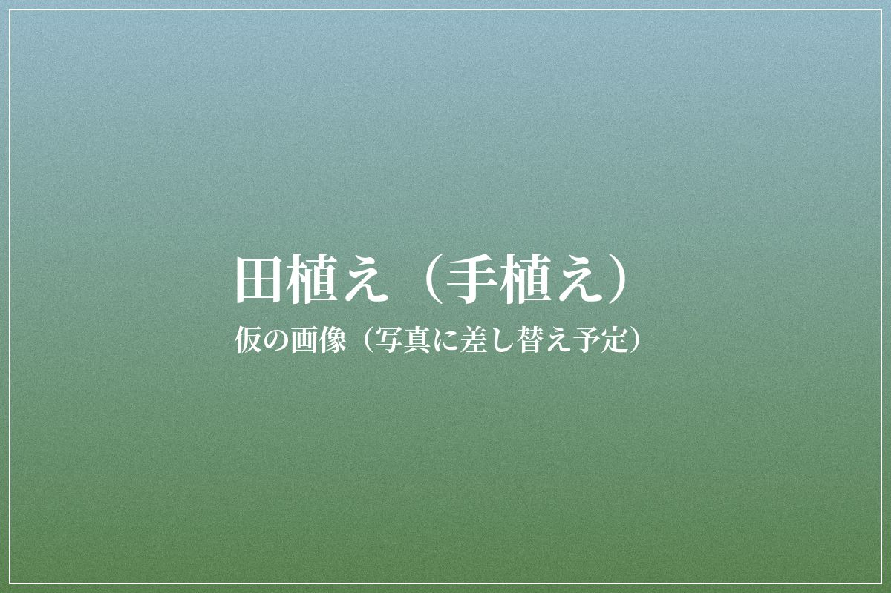
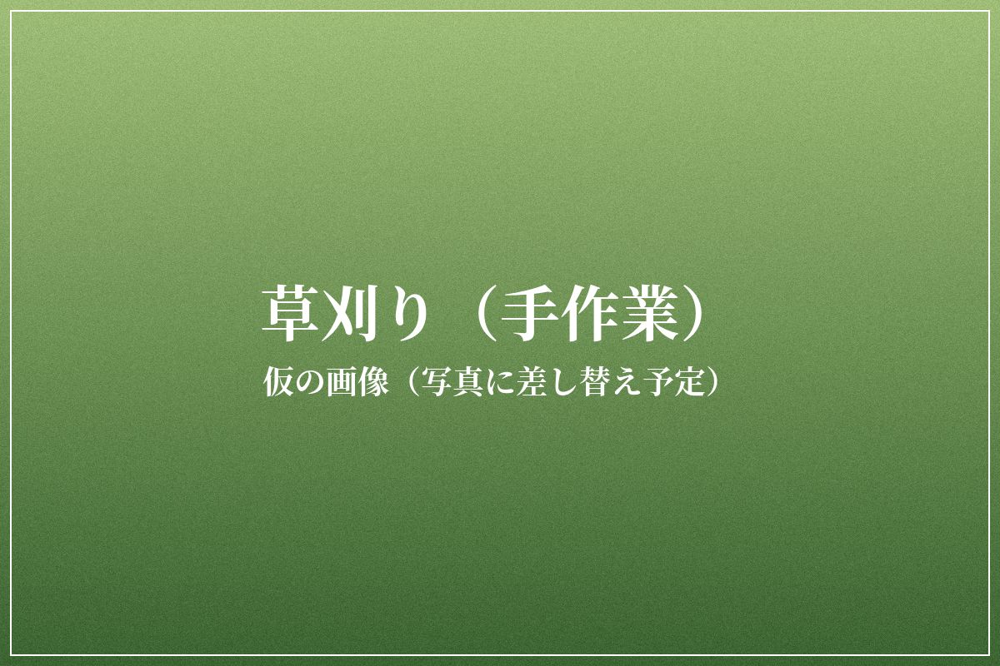
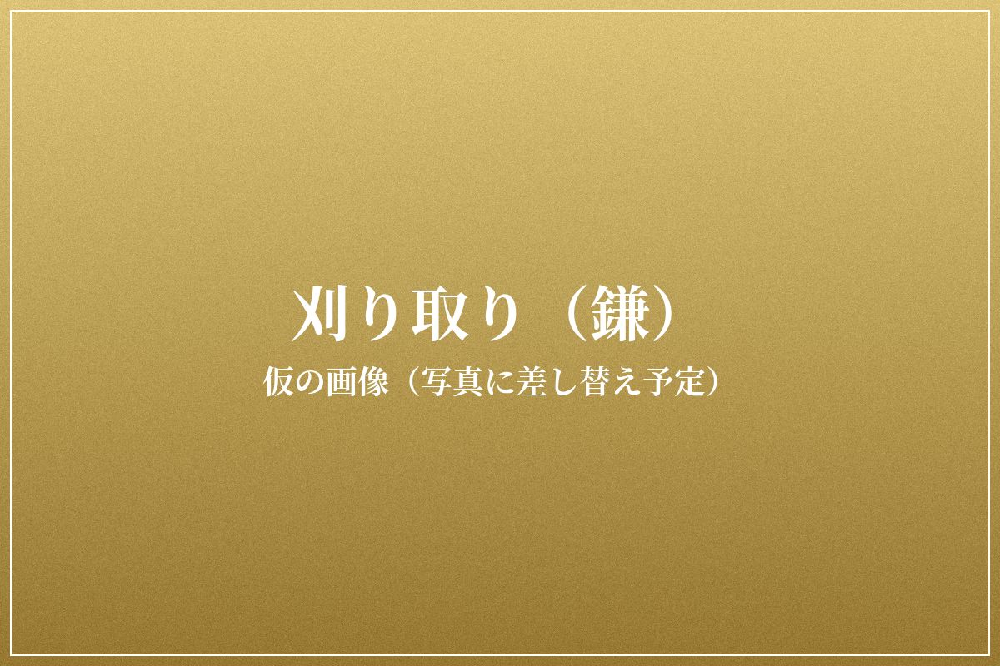
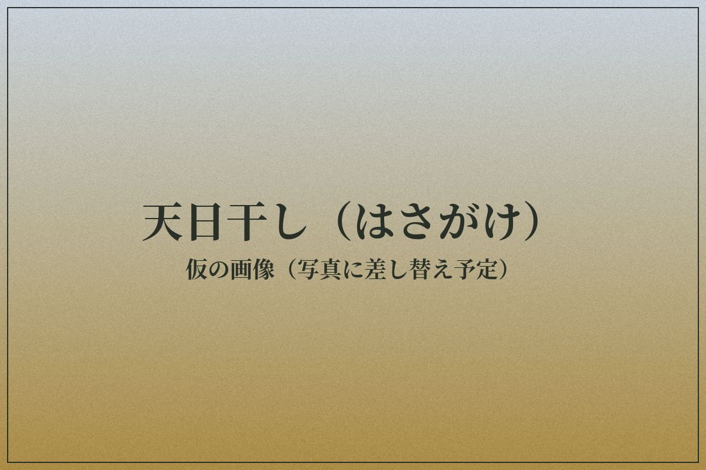
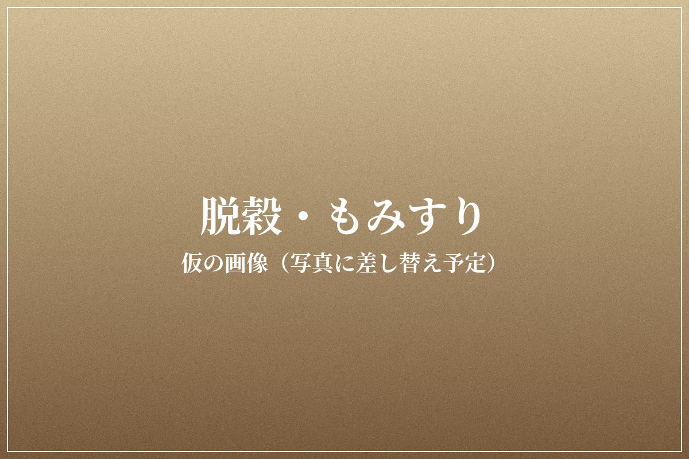
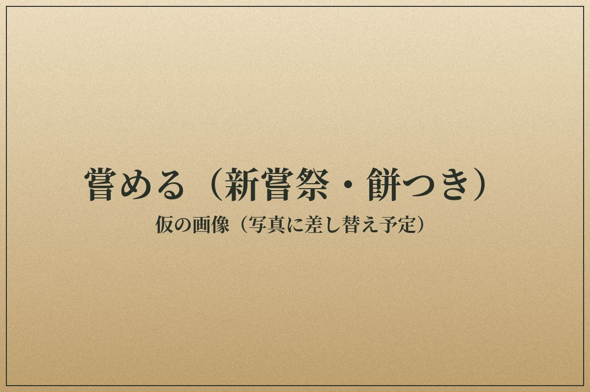
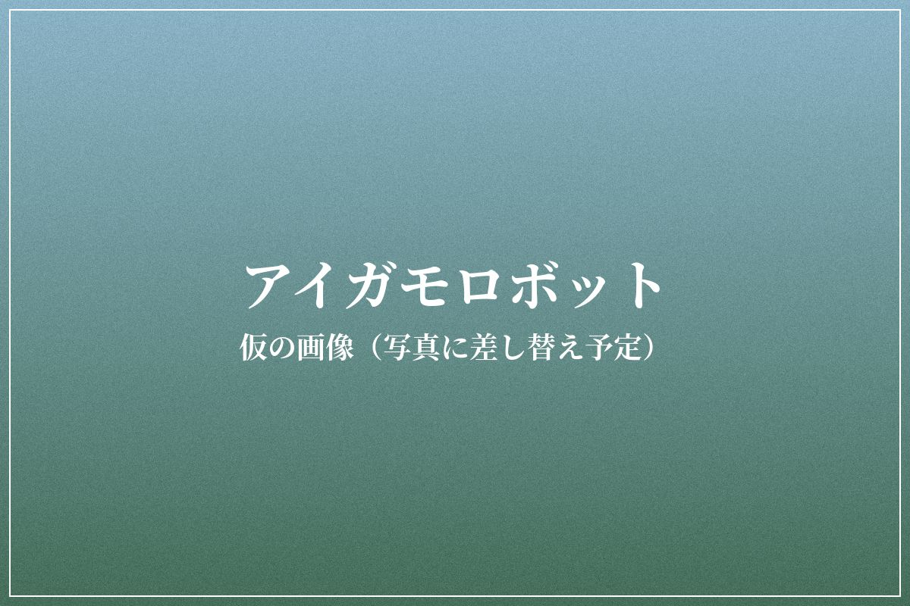
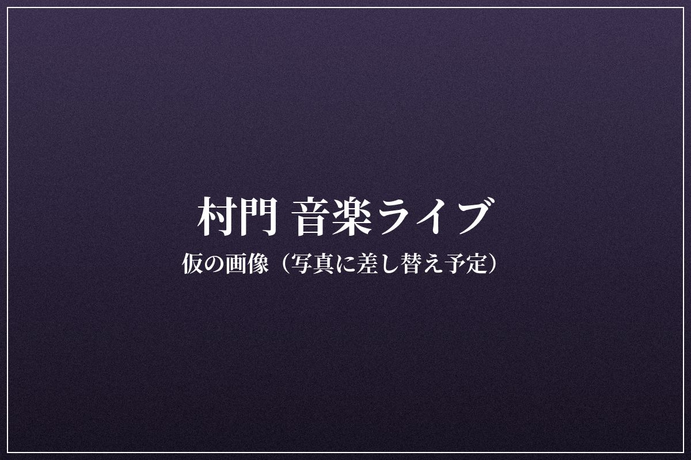
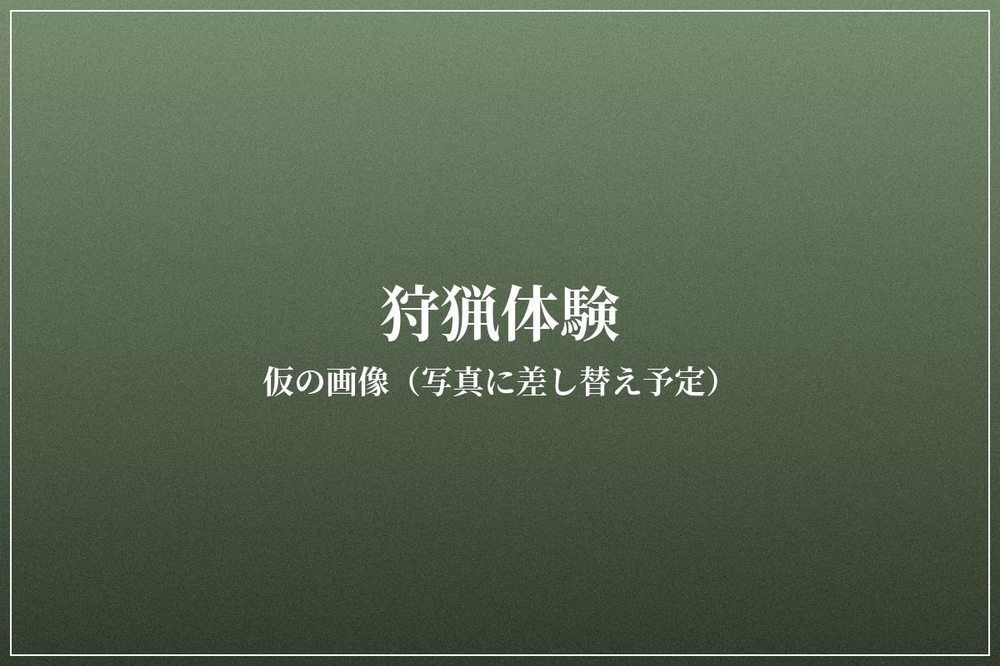
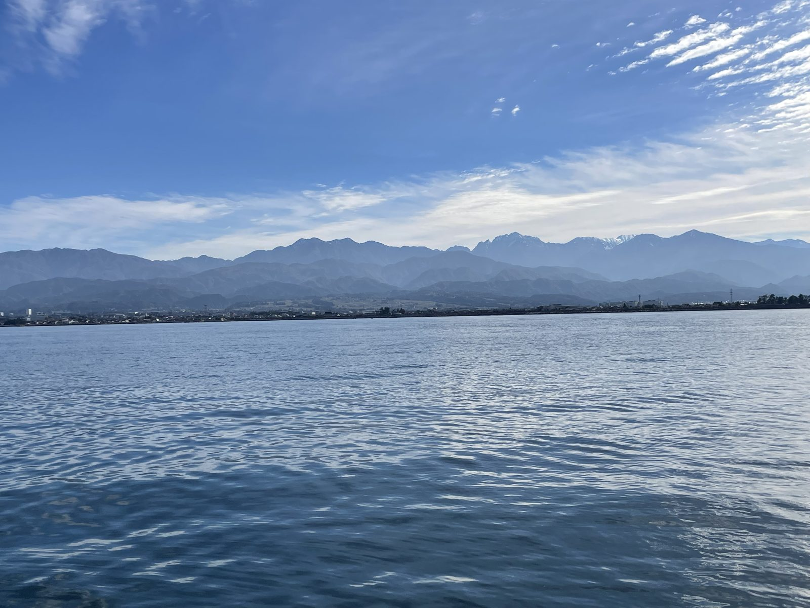

手の仕事と、最新の技術。山と川と海。
機械を使わず、手と昔の道具だけで一年の米づくりをたどります。苗を植え、草を刈り、稲を刈って稲架掛けで天日に干し、脱穀ともみすりをして、ようやく天空米になります。最後は、実りに感謝していただきます。季節ごとの村の行事も、あわせて楽しめます。

一田植え5月ごろ苗を一本ずつ手で植える山菜採り5月
二草刈り6〜8月除草剤を使わず、手で草を刈る・取るホタル観察6月中旬星座観察8月中旬
三刈り取り10月初旬鎌で一株ずつ刈るおわら風の盆9月1〜3日キノコ狩り9月
四稲架掛け
五脱穀・
六嘗める11月〜正月実りに感謝して、天空米をいただく新嘗祭・天空米の食べ比べ11月餅つき正月農薬も肥料も使わない稲は育ちがゆっくりなので、刈り取りは10月に入ってからです。時期は目安で、その年の天候と稲の育ちで決まります。緑の小さな文字は、その時期の村の行事です。

同じ田んぼで、アイガモロボットも動かします。水面を走って泥をかき混ぜ、雑草が育ちにくくする除草ロボットです。手作業とロボットの両方を知ると、人の手の仕事が何をしていたのかが見えてきます。

村長がマスターを務める居酒屋と音楽の家、村門。世界中のミュージシャンとのつながりから生まれるライブを、田んぼと山の恵みの料理といっしょに楽しみます。

猟師と山に入り、獣の足跡やわなの仕組みを学びます。獲った命をいただくまでを見届けます。
銃やわなを扱うのは、狩猟免許をもつ猟師です。参加者は同行と見学が中心になります。

田んぼの水が生まれる山の沢をさかのぼって川の魚を釣り、その水が流れこむ富山湾へは船で出ます。山から海まで、水のめぐりを釣りでたどります。